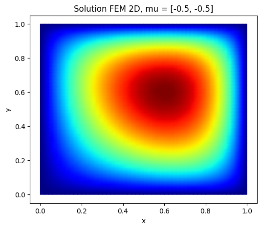
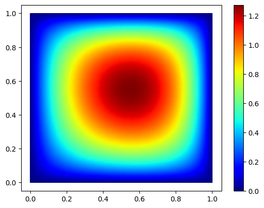
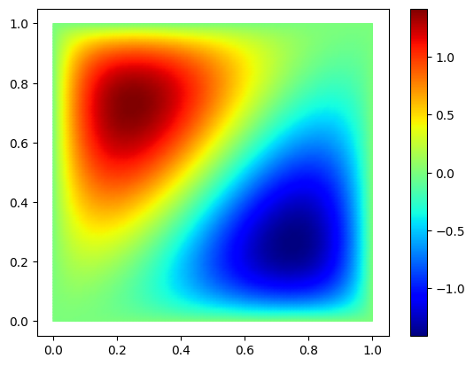
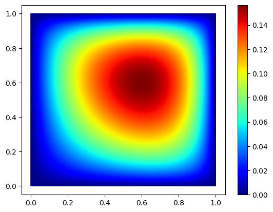

Tp6
TP5 POD + EIM
#Install package
import sys
!{sys.executable} -m pip install numpy
!{sys.executable} -m pip install matplotlib
!{sys.executable} -m pip install scikit-fem
# import packages
import skfem # for Finite Element Method
import numpy as np
import scipy.sparse as sp
import scipy.sparse.linalg as spla
import matplotlib.pyplot as plt
from scipy.interpolate import interp1d
import random
from scipy.sparse.linalg import factorized
import time
============================================================
Greedy-Galerkin with FEM
Poisson equation / thermal stationary conduction
Elliptic diffusion problem (2D) with scikit-fem:
$ -\nabla \cdot ( A(x,\mu) \nabla u) = g(x) \ \mathrm{ on }\ (0, 1)^2$
$ u(0) = u(1) = 0 (Dirichlet)$
FEM:
Find $u_h = \sum_{i=1}^{\mathcal{N}} u_i w_i$ such that :
$a(u_h,v_h;\mu)=l(v_h), \ \forall v_h \in V_h$
with Dirichlet boundary $u=0$ on $\partial \Omega$.
Here $\Omega=[0,1] \times [0,1] = \Omega_1 \cup \Omega_2 \cup \Omega_3 \cup \Omega_4$. We use a uniform Delaunay mesh, with $Nx \times Ny$ degrees of freedom.
$A(x,\mu)= \frac{1}{(x_1-\mu_1)^2+ (x_2-\mu_2)^2} $ in $ \Omega_i$
with $\mu_i \in [-2,-1]$
$g=1$
1) Complete the code and solve the problem for mu =[1,2,3,4]
"""
Elliptic diffusion problem (2D) with scikit-fem:
$ -\nabla \cdot ( A(x,\mu) \nabla u) = g(x) \ \mathrm{ on }\ (0, 1)^2$
$ u(0) = u(1) = 0 (Dirichlet)$
"""
import numpy as np
import matplotlib.pyplot as plt
from skfem import MeshTri, Basis, asm, enforce,solve
from skfem.element import ElementTriP1
from skfem.helpers import dot, grad
from skfem.assembly import BilinearForm, LinearForm
from skfem import solve
# -----------------------
# Problem setup
# -----------------------
Nx = 50
Ny = 50
# Maillage triangulaire du carré (0,1)^2
m = MeshTri.init_tensor(
np.linspace(0.0, 1.0, Nx + 1),
np.linspace(0.0, 1.0, Ny + 1)
)
basis = Basis(m, ElementTriP1())
# Dirichlet boundary DOFs
D = basis.get_dofs().all() # all dofs
# l2 scalar product in 2D
@BilinearForm
def massMatrix(u, v, _):
return ...
# -----------------------
# RHS: g = 1
# -----------------------
@LinearForm
def rhs(v, w):
return ...
# -----------------------
# Bilinear form
# -----------------------
@BilinearForm
def diffusion(u, v, w):
return ...
@BilinearForm
def diffusion_mu(u, v, w):
...
return ...
# -----------------------
# Assembly
# -----------------------
def FEMassembling(m,mu):
basis = Basis(m, ElementTriP1())
A11 = asm(diffusion_mu, basis,mu1=mu[0],mu2=mu[1]) # on Omega_11
b = asm(rhs, basis) # g = 1
return A11, b, basis
# -----------------------
# Solve
# -----------------------
def FEMsolve(A11, b, basis, mu):
A_bc, b_bc = enforce(A11, b, D=basis.get_dofs().all()) # Dirichlet
u = solve(A_bc, b_bc) #solve
return u
# -----------------------
# Example
# -----------------------
mu =[-0.5,-0.5]
A11, b, basis = FEMassembling(m,mu)
start = time.time()
u = FEMsolve(A11, b, basis, mu)
end = time.time()
print("Time :", end - start, "secondes")
# -----------------------
# Plot
# -----------------------
fig, ax = plt.subplots(figsize=(6, 5))
m.plot(u, ax=ax, shading='gouraud')
ax.set_title(f"Solution FEM 2D, mu = {mu}")
ax.set_xlabel("x")
ax.set_ylabel("y")
plt.show()
Time : 0.010053157806396484 secondes

############
""" POD """
############
def Construct_RB(NumberOfSnapshots=100,NumberOfModes=20,m=m):
...
# orthogonality test
return ReducedBasis
Nx=Ny = 100
m = MeshTri.init_tensor(
np.linspace(0.0, 1.0, Nx + 1),
np.linspace(0.0, 1.0, Ny + 1)
)
Phi=Construct_RB(NumberOfSnapshots=100,NumberOfModes=6,m=m)
ReducedBasis=Phi.T
fig, ax = plt.subplots()
im=m.plot(ReducedBasis[:,0], ax=ax, shading='gouraud',colorbar=True)
fig, ax = plt.subplots()
m.plot(ReducedBasis[:,1], ax=ax, shading='gouraud',colorbar=True)
plt.show()
eigenvalues: [2.33547231e+01 2.35622158e-03 1.69859839e-03 1.10159535e-07
4.52355318e-09 1.03259991e-09]


def solve_fem_rom(mu, Phi,m):
...
return u_rom
mu = (-0.5,-0.5)
Nx=Ny = 100
m = MeshTri.init_tensor(
np.linspace(0.0, 1.0, Nx + 1),
np.linspace(0.0, 1.0, Ny + 1)
)
basis = Basis(m, ElementTriP1())
A11, b, basis = FEMassembling(m,mu)
Phi=Construct_RB(NumberOfSnapshots=100,NumberOfModes=6,m=m)
start = time.time()
u_proj=solve_fem_rom(mu, Phi,m)
end = time.time()
print("Time :", end - start, "secondes")
fig, ax = plt.subplots()
m.plot(u_proj, ax=ax, shading='gouraud',colorbar=True)
plt.show()
eigenvalues: [2.35781631e+01 2.66412052e-03 1.98265280e-03 1.00231404e-07
4.47211962e-09 1.30141639e-09]
Time : 0.03787684440612793 secondes

EIM
2. Complete the code EIM
from skfem import Basis, ElementTriP0
# ============================================================
# Param
# ============================================================
NumberOfModes = ...
NumberOfSnapshots = ...
MuMin = -2.0
MuMax = -1.0
basis = Basis(m, ElementTriP0()) # P0 : one value for each element
dof_locs = basis.doflocs
ndof = dof_locs.shape[1]
# training set
mu1_train = ...
mu2_train = ...
# ============================================================
# Function g(x; mu1, mu2)
# ============================================================
def g_fun(x, mu1, mu2):
return ...
def project_g(mu1, mu2):
"""
Projection/interpolation of g on FEM P0.
"""
return basis.project(lambda x: g_fun(x, mu1, mu2))
# ============================================================
# OFFLINE : initialization
# ============================================================
# snapshots g(mu)
ntrain = NumberOfSnapshots * NumberOfSnapshots
GGrid = np.zeros((ndof, ntrain))
GinftyGrid = np.zeros(ntrain)
mu_pairs = []
col = 0
for a in mu1_train:
for b in mu2_train:
u = ... # g projected
GGrid[:, col] = u
GinftyGrid[col] = ... # norm inf of u
mu_pairs.append((a, b))
col += 1
# first parameter
muIndex = ...
muIndexlist = [...]
mu1_star, mu2_star = ...
g1 = ...# first u(:,mu)
# first magic point
XIndex = ...
MagicPointIndiceslist = [...]
MagicPointlist = [(dof_locs[0, XIndex], dof_locs[1, XIndex])]
print("First magic point :", MagicPointlist[0])
# FIRST BASIS EIM
q1 = ...
qlist = [...]
# ============================================================
# OFFLINE : EIM iterations
# ============================================================
for M in range(1, NumberOfModes):
print(f"M = {M}")
# Triangular matrix Q_M
Qmat = ...
for i in range(M):
for j in range(M):
Qmat[i, j] = ...
ResidualGrid = np.zeros((ndof, ntrain))
ResidualInf = np.zeros(ntrain)
# Residual for each training parameters
for col, (a, b) in enumerate(mu_pairs):
u = ...
Gvec = ... # right hand side
alpha= ... # coefficients
residual =...
for i in range(M):
residual -= ...
ResidualGrid[:, col] = ...
ResidualInf[col] = ...
# avoir already chosen parameter
for old_idx in muIndexlist:
ResidualInf[old_idx] = -1e30
# new optimal parameter
muIndex =...
muIndexlist.append(...)
mu1_star, mu2_star = ...
gM = ...
# avoid already chosen point
scores = np.abs(gM)
for old_x in MagicPointIndiceslist:
scores[old_x] = -np.inf
# new magic point
XIndex = ...
MagicPointIndiceslist.append(...)
MagicPointlist.append((dof_locs[0, XIndex], dof_locs[1, XIndex]))
print("New magic point :", MagicPointlist[-1])
print("Selected parameter :", (mu1_star, mu2_star))
#basis function
qM = ...
qlist.append(...)
# ============================================================
# ONLINE
# ============================================================
mu1_target = ...
mu2_target = ...
u_true = project_g(mu1_target, mu2_target)
# complete Q
Qmat = ...
for i in range(NumberOfModes):
for j in range(i + 1):
Qmat[i, j] = ...
Gvec = ...
# coefficients EIM
alpha = ...
# reconstruction EIM
u_eim = ...
for j in range(NumberOfModes):
u_eim += ...
# ============================================================
# Test in one point (xseek, yseek)
# ============================================================
xseek, yseek = 0.5, 0.5
element_finder = m.element_finder()
element_index = element_finder(np.array([xseek]), np.array([yseek]))[0]
approx_value = u_eim[element_index]
true_value_fem = u_true[element_index]
true_value_exact = g_fun(np.array([[xseek], [yseek]]), mu1_target, mu2_target)[0]
print()
print(f"Tested point : ({xseek}, {yseek})")
print(f"Approximation EIM : {approx_value}")
print(f"Projeted FEM : {true_value_fem}")
print(f"Exact value g(x, mu) : {true_value_exact}")
print(f"Error |EIM - FEM| : {abs(approx_value - true_value_fem)}")
print(f"Error |EIM - exact| : {abs(approx_value - true_value_exact)}")
3. Change your previous code to obtain one OFFLINE EIM and one ONLINE EIM and test it with your FEM + Reduced Basis Method code
def build_eim_offline(
mesh,
number_of_modes=15,
number_of_snapshots=20,
mu_min=-2.0,
mu_max=-1.0,
):
...
return {
"q_basis": q_basis,
"magic_indices": magic_indices,
"magic_points": magic_points,
"Q": Q,
"basis_coeff": basis_coeff,
"mu_pairs": mu_pairs,
}
def eim_online(mu1, mu2, eim_data):
"""
Compute theta(mu) such that
g(x;mu) ≈ sum_m theta_m(mu) q_m(x)
"""
...
return theta
Elise Grosjean
Assistant Professor
My research interests include numerics, P.D.E analysis, Reduced basis methods, inverse problems.